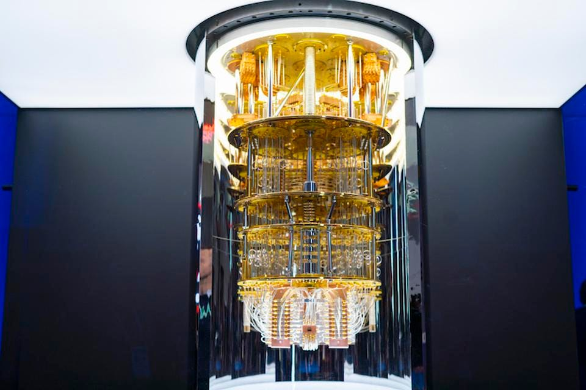

Quantum-Resistant Banking: Shielding Assets in the Age of Cryptographic Transition

Figure 1: IBM Quantum System One, the benchmark for post-quantum cryptographic testing.
Security Intelligence Brief
- The Quantum Threat: Shor’s algorithm poses a direct risk to current RSA and ECC encryption standards used in banking.
- PQC Transition: Major central banks have initiated the migration to Post-Quantum Cryptography (PQC) as of Q1 2026.
- QKD Deployment: Quantum Key Distribution is being utilized for high-value inter-bank settlement corridors.
As we navigate through the first half of 2026, the financial industry is facing a quiet but existential transition known as the "Quantum Migration." For decades, the security of global capital has relied on the mathematical difficulty of factoring large prime numbers, a task that traditional supercomputers would take millennia to complete. However, the recent breakthroughs in fault-tolerant quantum computing have rendered these legacy encryption standards increasingly vulnerable, forcing major banking institutions and central clearinghouses to accelerate the implementation of quantum-resistant algorithms to prevent what cryptographers call "Store Now, Decrypt Later" attacks by state-sponsored actors.
This cryptographic pivot is not merely a technical patch but a complete overhaul of the digital plumbing that supports global finance. National regulators in the G7 have mandated that all "Tier 1" financial institutions must demonstrate a clear roadmap for Post-Quantum Cryptography (PQC) integration by the end of this year. This involves replacing traditional RSA and Elliptic Curve signatures with lattice-based and hash-based signature schemes that can withstand the brute-force processing power of a commercial-grade quantum processor. For the executive suite, this means significant capital expenditure in upgrading server hardware and re-certifying thousands of digital certificates across distributed ledger networks.
Beyond software-based cryptography, the most resilient banks are now deploying Quantum Key Distribution (QKD) hardware for their most sensitive communication channels. By using the principles of quantum mechanics—where the act of observing a particle changes its state—banks can now create physical communication links that are theoretically unhackable. Any attempt to intercept the transmission of a private key would be immediately detected by the sender and receiver, causing the key to be discarded. While currently limited to dedicated fiber-optic links between metropolitan data centers, QKD is becoming the gold standard for high-frequency trading firms and sovereign wealth fund management.
For investors and asset managers, the quality of a bank’s quantum-resistance roadmap is becoming a critical metric for long-term counterparty risk assessment. Institutions that lag behind in this transition face the very real possibility of seeing their historical data backups compromised in the near future, leading to unprecedented legal liabilities and loss of client trust. At Global Capital Insights, we emphasize that digital security is no longer an IT concern but a fundamental component of wealth preservation. In an era where computational power is becoming the ultimate weapon of economic warfare, being "quantum-ready" is the only way to ensure that the assets of today remain secure for the markets of tomorrow.